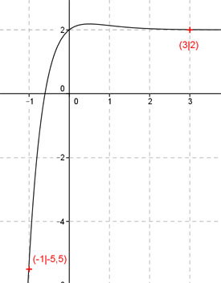
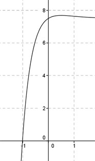

Aufgabe 128 Ergänzen Sie die Wertetabelle für den Graphen: y = x * e-2x + 2 x -1 3 y -5,5 2 y = f(3) = 3 * e-2*3 + 2 = = 3 * e-6 + 2 = 0,007 + 2 = 2 gerundet  An welchen Stellen x die Funktion den Wert -5,5 annimmt, ist elementar nicht zu ermitteln. Abgelesen: Es ist eine Stelle. Zur Berechnung wendet man ein Näherungs- verfahren an, hier die Regula falsi. Regula falsi: x0 = gesuchte Nullstelle x1 * |y(x2)| + x2 * |y(x1)| x0 = ------------------------------ |y(x1)| + |y(x2)| f(x) = -5,5 eingesetzt: -5,5 = x * e-2x + 2 | +5,5 x * e-2x + 7,5 = 0 Als Funktion: y = x * e-2x + 7,5 Die Nullstellen dieser Funktion (y = 0) entsprechen den gesuchten Werten für x.  Abgelesen: Nullstelle zwischen -1,1 und -0,9. Nullstelle x0 zwischen -1,1 und -0,9 mit Excel ermittelt: A B C D E F G H I J -1,1 -0,9 2,0563 2,4253 -2,2620 -2,1827 -4,4447 4,4816 -0,9918 0,2929 -1,1 -0,9918 0,2929 2,4253 -0,3222 -2,4053 -2,7275 2,7182 -1,0034 0,0361 -1,1 -1,0034 0,0361 2,4253 -0,0397 -2,4336 -2,4733 2,4613 -1,0048 0,0044 -1,1 -1,0048 0,0044 2,4253 -0,0048 -2,4370 -2,4418 2,4296 -1,0050 0,0005 -1,1 -1,0050 0,0005 2,4253 -0,0006 -2,4374 -2,4380 2,4258 -1,0050 0,0001 Die gesuchte Nullstelle ergibt sich nach mehreren Näherungen mit ausreichender Genauigkeit zu x0 = -1 gerundet. Weitere Erläuterungen zur Tabelle siehe Aufgabe 101.